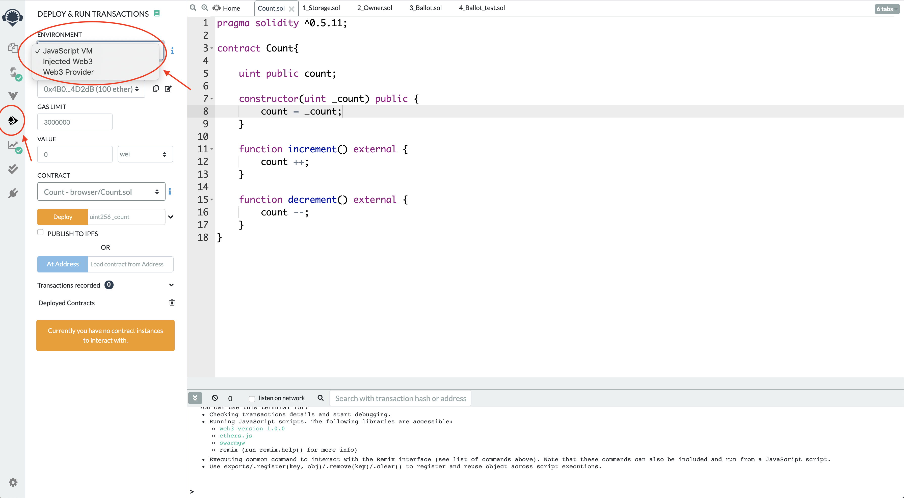

访问Remix官网，选择Solidity，新建文件，命名为 Count.sol。
把如下代码写入Count.sol：
1 | pragma solidity ^0.5.11; |
选择左侧编译器版本，点击Compile：
编译完成后，点击左侧Deploy图标，环境选择 JavaScript VM。JavaScript VM是在本地测试运行，包括5个有100ether的账号供我们测试。选择Injected Web3可以连接MetaMask的Test Network或者Main Network。

Gas Limit可以不改，防止合约中有死循环把钱花光了。Value是真实的ether，需要转账的话要在value中赋值。Contract中只有一个合约，就是我们写的Count。Deloy后面需要给定输入，因为我们的构造器需要一个输入。我们这里填2，然后点击Deploy。
部署完成后会发现账户中的钱变成99.99999…ether了。因为部署智能合约需要花费一定的ether。随后看到下方有三个按钮，其中decrement和increment就是我们合约中的两个函数了，可以点这个函数让count的值加一或减一。每次调用函数都需要花费一定的ether。最后蓝色的count按钮可以让我们查看变量当前的值。因为我们设置count是public，所以所有人都可见。查看变量的值不需要花费ether。
这里存在一个潜在的风险，我们设定count变量的取值是非负的，如果一直调用减法，当count值小于0时，会反过来变成uint取值范围的最大值。在真正编写智能合约时一定要注意此类问题。（这里就不改了hhh）
至此，我们完成了第一个Solidity编写的智能合约。当然，这个合约并没有被部署到Test Network或者Main Network上，只是在本地测试一下。大家也可以试着在Account中切换账户随意调用函数试一试。
注：本篇文章为本人学习笔记，仅供参考。其中难免会有理解错误，请大家结合其他材料学习。如有发现错误，欢迎在评论区指出～